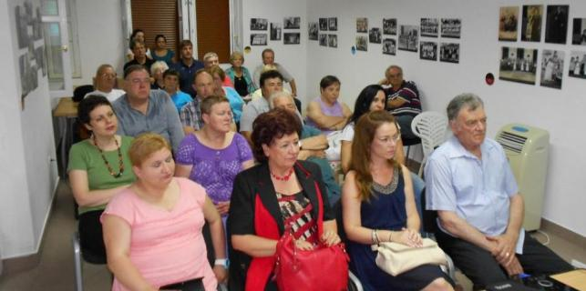
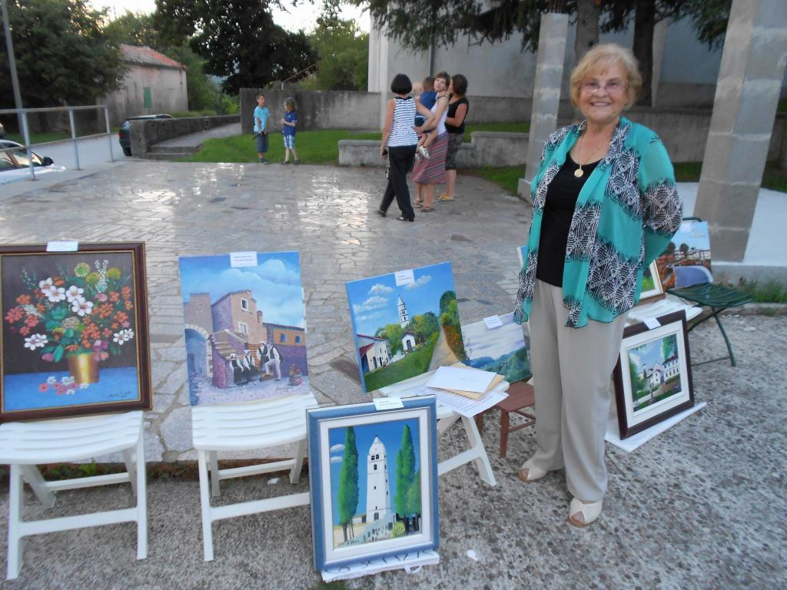

Prigodnim programima koje je organizirala udruga Spod Učke, u Šušnjevici je obilježen Dan vlaškog jezika, manifestacija kojom ljudi iz ovog kraja uz pomoć stručnjaka i institucija nastoje sačuvati i revitalizirati jedan od najugroženijih jezika Europe.

Više se o vlaškom jeziku, koji se zajedno sa žejanskim u literaturi obično naziva istrorumunjskim, moglo saznati iz predavanja lingvistice Zvjezdane Vrzić "Hoće li uvijek biti govornika vlaškog? Stvarnost i stavovi". Vrzić je iznijela rezultate istraživanja koje je s kolegom Johnom Singlerom, u sklopu zajedničkog projekta riječkog i njujorškog sveučilišta, provela među govornicima vlaškog/žejanskog jezika u matičnim selima, ali i u Americi među iseljenicima.
Po njenim nalazima, žejanski u Žejanama u općini Matulji te vlaški u istarskim selima Šušnjevica, Brdo, Nova Vas, Letaj i Jasenovik aktivno i tečno danas govori svega 120 stanovnika ovih sela, 400-tinjak govornika koji žive drugdje u Hrvatskoj te još oko 500 iseljenika, najviše u Americi, od čega barem 300 u New Yorku.
Smatra se da su preci današnjih govornika vlaškog i žejanskog jezika u Istru došli početkom 16. stoljeća iz sjeverne Dalmacije. U terenskom istraživanju nije pronađen niti jedan aktivni govornik mlađi od 20 godina!
Anketa sa 105 pitanja provedena među aktivnim govornicima pokazala je da se ti jezici koriste uglavnom u komunikaciji među starijim članovima obitelji, a puno manje u komunikaciji s djecom i unucima. Govornici žejanskog jezika više vjeruju u vitalnost svoga jezika nego govornici vlaškog.
Već desetljećima traje proces zamjene većinskim hrvatskim jezikom, a najmlađi članovi obitelji u kojima stariji govore vlaški ili žejanski te jezike uopće ne smatraju značajnim obilježjem vlastite lokalne autentičnosti, zaključak je istraživanja Zvjezdane Vrzić.
Da bi za koju godinu možda moglo biti drukčije, pokazala je prezentacija Viviane Brkarić, predsjednice udruge Spod Učke, koja u Šušnjevici vodi igraonicu Puljići (na vlaškom - ptičice). Uz ostale programe, od proljetos snimaju i kratke filmove i dokumentarne reportaže u kojima mlade novinarke Ani i Natali Krajcar sa starijim mještanima šušnjevičkog kraja na vlaškom jeziku (uz hrvatski titl u završnoj montaži) razgovaraju o prošlosti i sadašnjosti ovog kraja.
Publici je prikazano desetak takvih filmića, s temama od legendi o zakopanom blagu do prikaza zanatskih umijeća, a ovdašnja su djeca snimila i dva videospota pjevajući na vlaškom jeziku.
Serijal, koji se snima i dalje, nazvan je "Cu ani și natali prin nostru cråi" (S Ani i Natali po našem kraju). Najmlađi žitelji Šušnjevice, Brda, Nove Vasi, Letaja i Jasenovika, koji u svojim obiteljima sve manje čuju vlaški jezik budući da stariji s njima nastoje govoriti samo hrvatski, tako dobivaju novu priliku čuti zvuk i ugođaj jezika svojih predaka i postupno ga usvajati kao aktivni govornici.
 Na manifestaciji je predstavljen i slikarski opus amaterske umjetnice Laure Bubolić, rodom iz Brda, koja živi u Kanadi i na svojim slikama prikazuje motive iz starog zavičaja, istarska sela, ruralnu arhitekturu i narodne nošnje.
Dan kasnije je u drugom žarištu ovog ugroženog jezika, u selu Žejane s druge strane Učke održana slična manifestacija nazvana "Dan žejanskog jezika".
D. Šišović
August 3, 2014
© 2014 Glas Istre